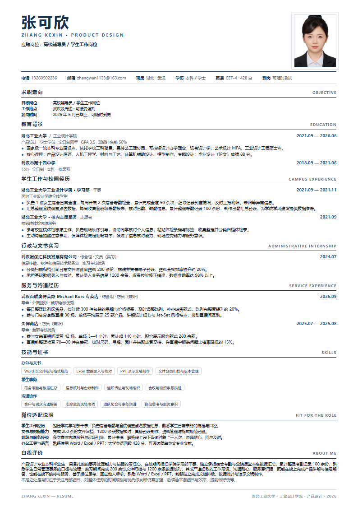

高校行政岗 · 设计类专业教师岗
五套 A4 简历，按行政与教学两条线分别打磨。
湖北工业大学工业设计学院产品设计专业 2026 届本科毕业生。行政向突出学生工作、文书归档、数据核对与沟通服务； 教师向突出主修课程成绩、毕业设计与作品成果、完整设计流程的实操经验。每套均为单页 A4，可直接投递或打印。
关于这几套简历
十套面向设计岗的版式之外，专门为高校岗位重做了内容口径：把「设计能力」的表达换成「学生事务 / 文书数据 / 教学科研」的表达，并补上主修课程成绩、毕业设计与论文成果。
- 行政向（01—03）：学生工作与校园经历前置，强调宿舍考勤、课堂点名数据汇总、文件归档、台账制作与现场组织。
- 教师向（04—05）：主修课程成绩与毕业设计、论文成果前置，完整呈现从材料调研到实物成型的落地过程。
- 统一口径：单页 A4、白底双色、无证书栏（教师资格证与普通话等级证书暂未取得，如有需要可在取得后补入）。
应聘信息
- 应聘方向
- 高校行政岗（辅导员 / 教务 / 综合管理）· 设计类专业教师岗
- 工作地点
- 武汉及周边，可接受调剂
- 毕业院校
- 湖北工业大学 · 工业设计学院
- 学历学位
- 本科 · 学士（2026 年 6 月毕业）
- 主修课程
- 家具专题设计 93、设计沟通 92、趣味性家居产品设计 90、专题设计（三）智能设计 90、人因工程 89
- 毕业设计
- 《解构竹韵：模块化竹材首饰设计》· 获评优秀毕业设计
- 毕业论文
- 《竹材特性与现代首饰创新的适配性研究》· 获评优秀毕业论文
- 英语水平
- 大学英语四级 CET-4 · 428 分
- 办公软件
- Word 长文排版 · Excel 数据核对 · PPT 演示制作